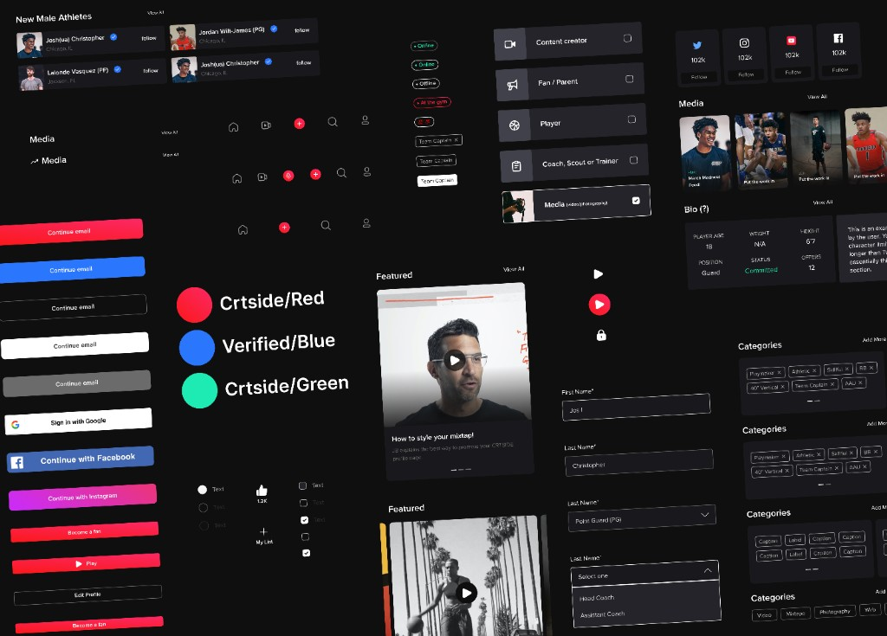
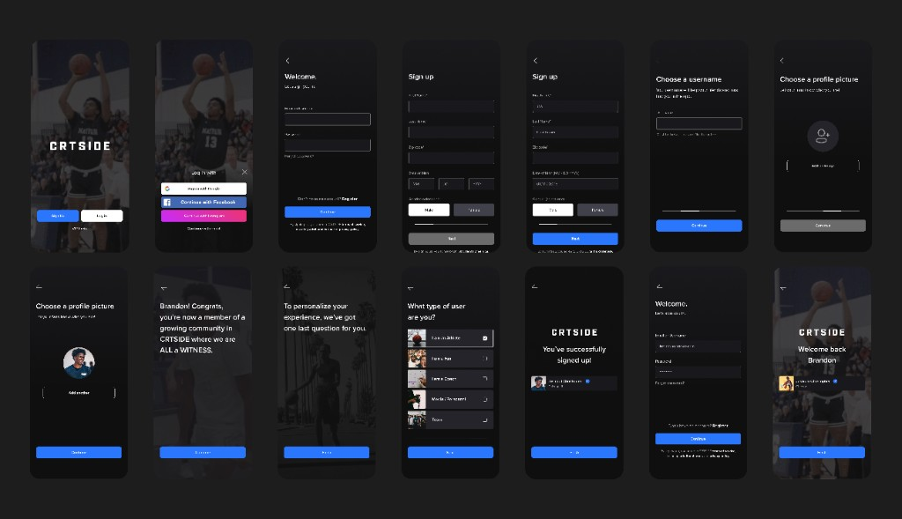
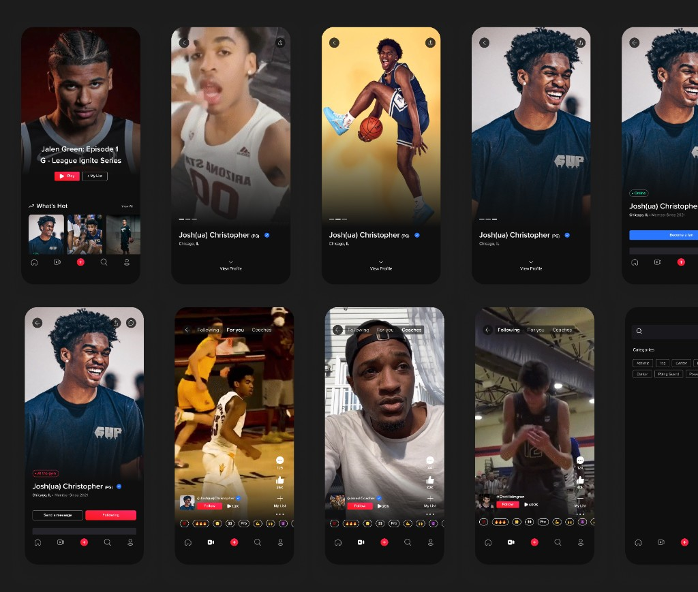

Crtside
A LinkedIn for athletes, scouts, and coaches — helping athletes showcase their skills and get into better college programs.

Overview
Crtside is a professional networking platform built for the sports world — a LinkedIn for athletes, scouts, and coaches. The app helps athletes get discovered by showcasing their skills through video highlights, profiles, and direct connections with coaches and recruiters.
I joined as the founding designer and worked with the company for about a year, taking the product from early concept to a high-fidelity Figma design and working prototype that helped the founders land pre-seed funding. The company was later acquired by another organization.
My Role
Founding Product Designer
- Led all product design from concept through prototype
- Built the complete UI in Figma — onboarding, profiles, video feed, search, and messaging
- Created a component library and design system with brand colors, typography, and reusable patterns
- Used Miro for user flows, journey mapping, and collaborative workshops with founders
- Delivered a working prototype for investor demos and fundraising
Design System & Components
I established the visual language for Crtside — a dark, athletic aesthetic with bold accent colors for CTAs, verification badges, and status indicators. The component library covered navigation, buttons, form inputs, athlete cards, video players, and role-based onboarding.

Onboarding & Authentication
Designed a full sign-up and onboarding flow that guides users through account creation, profile setup, and role selection — whether they're an athlete, fan, coach, scout, or media. The flow balances data collection with a welcoming, sports-forward visual experience.

Core Experience
The main app experience centers on athlete discovery and video content. Athletes build rich profiles with stats, highlights, and social proof. Coaches and scouts browse a TikTok-style video feed, search by position and skill, and connect directly with prospects.

Impact
- Design and prototype helped founders secure pre-seed funding
- Company was acquired after building traction in the athlete recruiting space
- Established a scalable design foundation the team could build on through acquisition